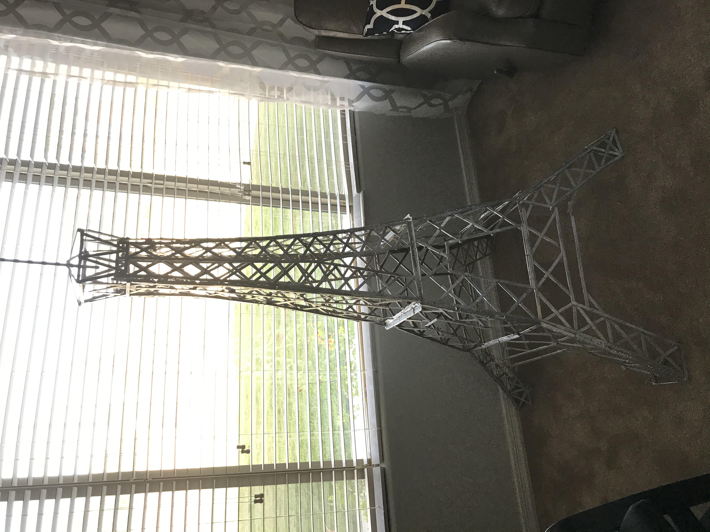
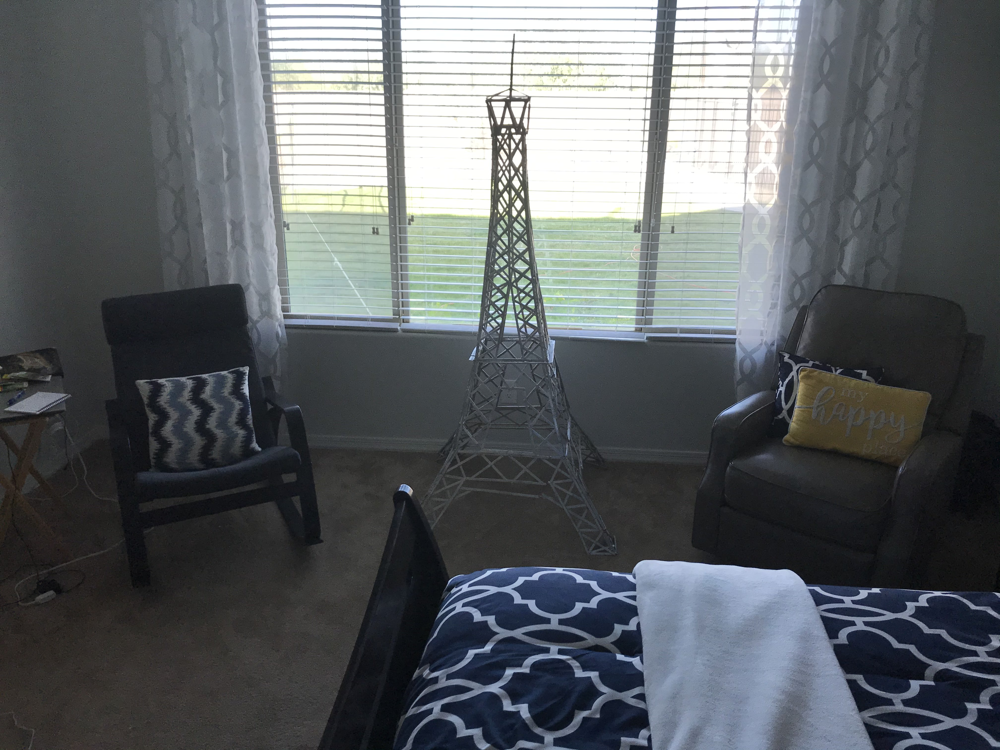
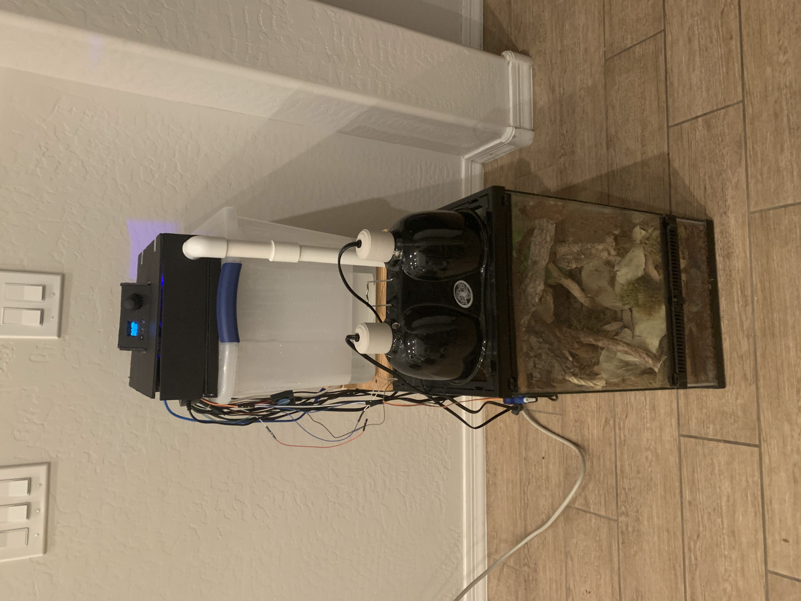
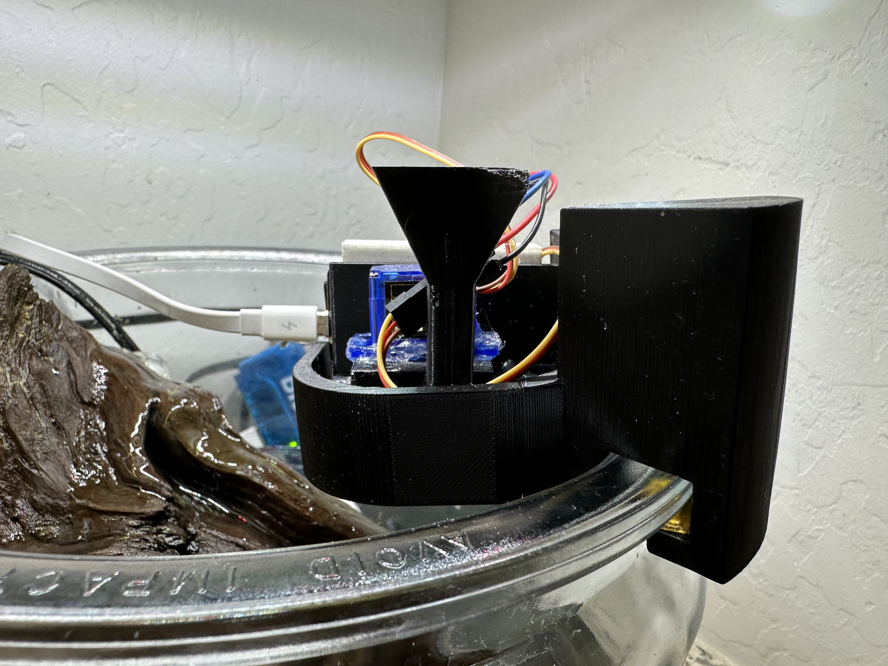

<!DOCTYPE html>
<html>
    
</html><!DOCTYPE html>
<html>
    <head>
        <title>Projects - Other</title>
        <link rel="stylesheet" href="styles.css">
        <link href='https://fonts.googleapis.com/css?family=Recursive' rel='stylesheet'>
        <meta charset="utf-8">
        <meta name="viewport" content="width=device-width, initial-scale=1">
    </head>
    <body>
        <header id="header">
            <h1>Project Portfolio</h1>
        </header>
        <nav>
            <a href="index.html" class="navItem">Home</a>
            <a href="ecosystems.html" class="navItem">Ecosystems</a>
            <a href="costumes.html" class="navItem">Costumes</a>
            <a href="vehicles.html" class="navItem">Vehicles</a>
            <a href="games.html" class="navItem">Games</a>
            <a href="otherProjects.html" class="navItem currentPageNav">Other Projects</a>
        </nav>
        <section id="other-intro">
            <h2>Other Projects</h2>
            <p>Here are a few miscellaneous projects that I've made over the years.</p>
        </section>
        <div class="spacer separator"></div>
        <section id="eiffel-tower">
            <h3>Eiffel Tower Model</h3>
            
            <div class="spacer"></div>
            <p>I honestly don't really know why I did this project, but I wanted to do something with my hands while watching a worldwide church broadcast in 2020. I used a picture my sister had of the Eiffel Tower as a guide and built this model using exclusively popsicle sticks and hot glue. Afterwards, I spray-painted it silver. It's not a scale model, but it's easy to tell what it is. Once I was finished it found a place as a decoration in our front room, and eventually a bedroom.</p>
            <div class="spacer"></div>
            
        </section>
        <div class="spacer separator"></div>
        <section id="Vivarium-automation">
            <h3>Vivarium Automation System</h3>
            
            <div class="spacer"></div>
            <p>In the summer of 2021, I decided I wanted to automate the lighting and spraying system of my gecko vivariums. Using an Arduino microcontroller, I wired together some sensors, a timer, some relays, a fan, and a fogger. I programmed it to turn on and off the lights at the right times, and I had the fogger in a big tub behind the vivarium to keep up the humidity. I utilized some 3D printed parts for the PVC pipe, in order to control where the fog goes and when. I no longer use the system, but it was fun to experiment with inputs and outputs in a self-regulating system.</p>
        </section>
        <div class="spacer separator"></div>
        <section id="fish-feeder">
            <h3>Automatic Fish Feeder</h3>
            
            <div class="spacer"></div>
            <p>I built an aquarium for my mom in 2023, and I wondered if I could make an automatic fish feeder. In 2025 when I got back from Japan, I decided to try and make it happen. The problem was, there is only one fish in the aquarium, so he only needs a very small amount of food, and most of the designs I found online gave  way too much food or utilized hardware I didn't have. So I decided to design my own.</p>
            <div class="spacer"></div>
            <p>Using Fusion360, I was able to design this part from scratch and experiment until it worked exactly how I wanted it too. I also used an ESP8266 module and programmed it to be controllable from my phone using the Blynk app. I still use this feeder today.</p>
        </section>
        <div class="spacer"></div>
        <a href="#header" class="back-to-top">Back to top</a>
        <footer>
            <p>Jacob T. Rollins</p>
            <p>rollinscreate29@gmail.com</p>
            <p>Cave Creek, AZ</p>
        </footer>
    </body>
</html>